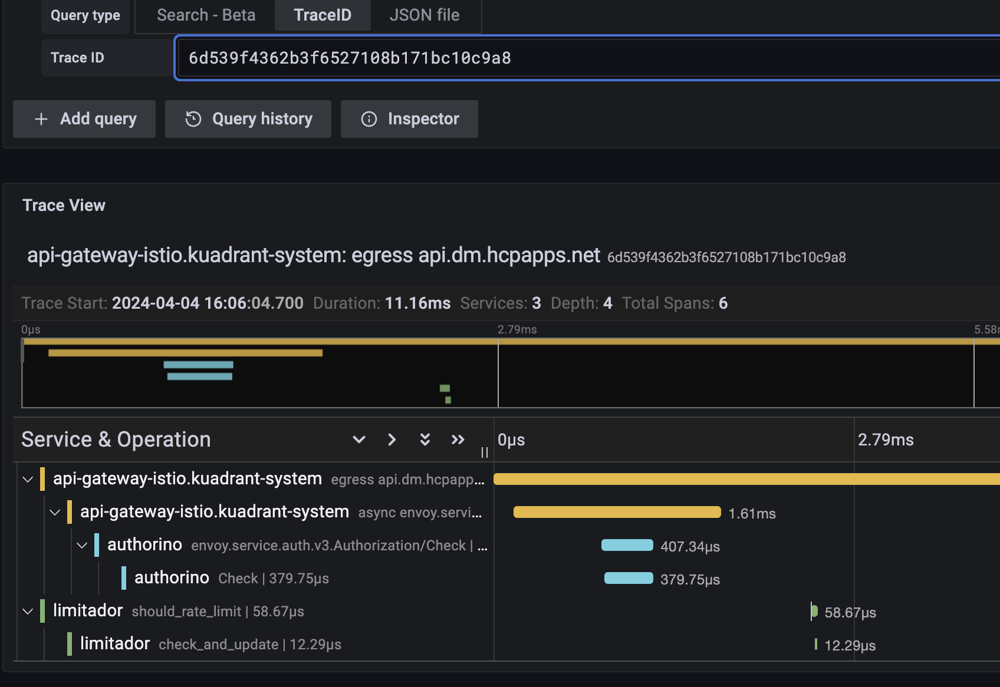
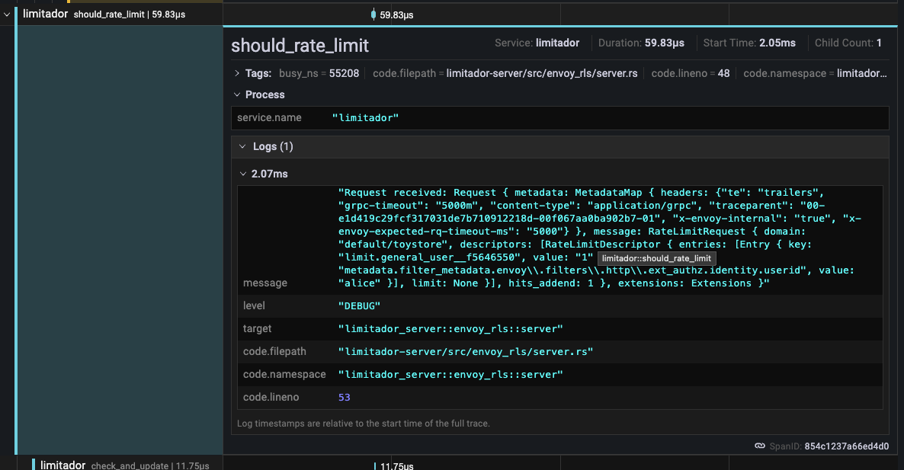

Enabling tracing with a central collector¶
Introduction¶
This guide outlines the steps to enable tracing in Istio and Kuadrant components (Authorino and Limitador), directing traces to a central collector for improved observability and troubleshooting. We'll also explore a typical troubleshooting flow using traces and logs.
Prerequisites¶
- A Kubernetes cluster with Istio and Kuadrant installed.
- A trace collector (e.g., Jaeger or Tempo) configured to support OpenTelemetry (OTel).
Configuration Steps¶
Istio Tracing Configuration¶
Enable tracing in Istio by using the Telemetry API.
Depending on your method for installing Istio, you will need to configure a tracing extensionProvider in your MeshConfig, Istio or IstioOperator resource as well.
Here is an example Telemetry and Istio config to sample 100% of requests, if using the Istio Sail Operator.
apiVersion: telemetry.istio.io/v1alpha1
kind: Telemetry
metadata:
name: mesh-default
namespace: gateway-system
spec:
tracing:
- providers:
- name: tempo-otlp
randomSamplingPercentage: 100
---
apiVersion: operator.istio.io/v1alpha1
kind: Istio
metadata:
name: default
spec:
namespace: gateway-system
values:
meshConfig:
defaultConfig:
tracing: {}
enableTracing: true
extensionProviders:
- name: tempo-otlp
opentelemetry:
port: 4317
service: tempo.tempo.svc.cluster.local
Important:
The OpenTelemetry collector protocol should be explicitly set in the service port name or appProtocol fields as per the Istio documentation. For example, when using gRPC, the port name should begin with grpc- or the appProtocol should be grpc.
Kuadrant Tracing Configuration¶
The Authorino and Limitador components have request tracing capabilities. Here is an example configuration to enable and send traces to a central collector. Ensure the collector is the same one that Istio is sending traces so that they can be correlated later.
apiVersion: operator.authorino.kuadrant.io/v1beta1
kind: Authorino
metadata:
name: authorino
spec:
tracing:
endpoint: rpc://tempo.tempo.svc.cluster.local:4317
insecure: true
---
apiVersion: limitador.kuadrant.io/v1alpha1
kind: Limitador
metadata:
name: limitador
spec:
tracing:
endpoint: rpc://tempo.tempo.svc.cluster.local:4317
Once the changes are applied, the authorino and limitador components will be redeployed tracing enabled.
Note:
There are plans to consolidate the tracing configuration to a single location i.e. the Kuadrant CR. This will eventually eliminate the need to configure tracing in both the Authorino and Limitador CRs.
Important:
Currently, trace IDs do not propagate to wasm modules in Istio/Envoy, affecting trace continuity in Limitador. This means that requests passed to limitador will not have the relavant 'parent' trace ID in its trace information. If however the trace initiation point is outside of Envoy/Istio, the 'parent' trace ID will be available to limitador and included in traces passed to the collector. This has an impact on correlating traces from limitador with traces from authorino, the gateway and any other components in the path of requests.
Troubleshooting Flow Using Traces and Logs¶
Using a tracing interface like the Jaeger UI or Grafana, you can search for trace information by the trace ID. You may get the trace ID from logs, or from a header in a sample request you want to troubleshoot. You can also search for recent traces, filtering by the service you want to focus on.
Here is an example trace in the Grafana UI showing the total request time from the gateway (Istio), the time to check the curent rate limit count (and update it) in limitador and the time to check auth in Authorino:

In limitador, it is possible to enable request logging with trace IDs to get more information on requests. This requires the log level to be increased to at least debug, so the verbosity must be set to 3 or higher in the Limitador CR. For example:
apiVersion: limitador.kuadrant.io/v1alpha1
kind: Limitador
metadata:
name: limitador
spec:
verbosity: 3
A log entry will look something like this, with the traceparent field holding the trace ID:
"Request received: Request { metadata: MetadataMap { headers: {"te": "trailers", "grpc-timeout": "5000m", "content-type": "application/grpc", "traceparent": "00-4a2a933a23df267aed612f4694b32141-00f067aa0ba902b7-01", "x-envoy-internal": "true", "x-envoy-expected-rq-timeout-ms": "5000"} }, message: RateLimitRequest { domain: "default/toystore", descriptors: [RateLimitDescriptor { entries: [Entry { key: "limit.general_user__f5646550", value: "1" }, Entry { key: "metadata.filter_metadata.envoy\\.filters\\.http\\.ext_authz.identity.userid", value: "alice" }], limit: None }], hits_addend: 1 }, extensions: Extensions }"
If you centrally aggregate logs using something like promtail and loki, you can jump between trace information and the relevant logs for that service:

Using a combination of tracing and logs, you can visualise and troubleshoot reuqest timing issues and drill down to specific services. This method becomes even more powerful when combined with metrics and dashboards to get a more complete picture of your users traffic.